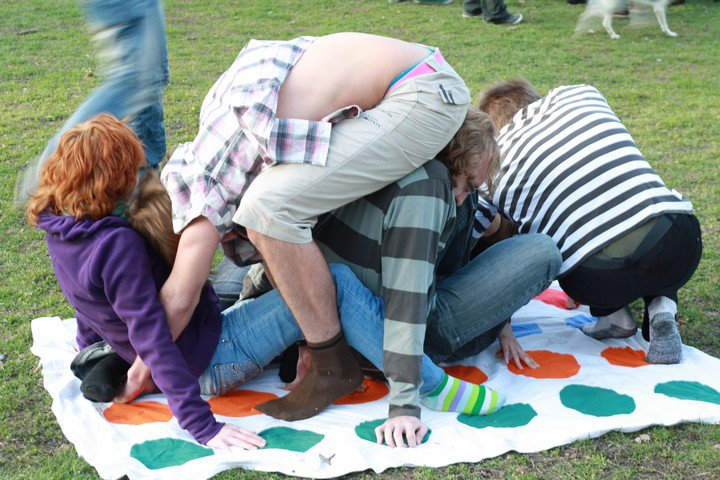
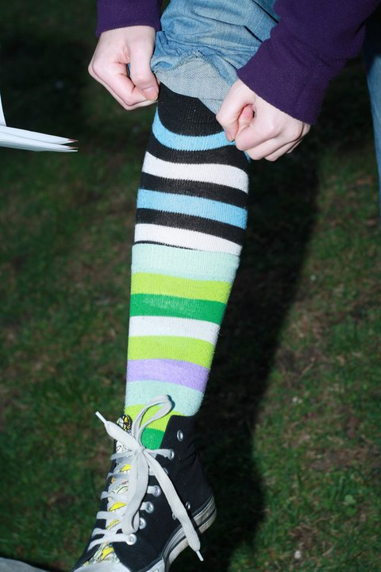

Péťa už mě dlouho uhání s napsáním příspěvku o výborné akci, která se uskutečnila ve středu po Velikonocích v Lužáneckém parku, takže jsem se dneska konečně hecla a dokud článek nedokončím, nesmím jít na kutě :D. Při té příležitosti jsem si zde vytvořila novou speciální rubriku, kterou jsem měla v plánu už dávno, ale musím přiznat, že jsem zrovna v této oblasti docela flákač. Přestože bych svůj studentský “kulturní” život rozhodně neoznačila za chudý, zkrátka se nikdy po žádném koncertě či jiné společenské akci už nerozhoupu k nějakému zrekapitulování či krátké recenzi. Proto bych zde chtěla slavnostně slíbit, že se v tomto směru pokusím polepšit :-) ! Dnes nás tedy čeká ohlédnutí za zážitkem spadajícím spíše do té “nekulturní” kategorie :D…
A teď už k samotné akci. Piknik plný soutěží, her, zábavy a samozřejmě také nějakého toho alkoholu jsme plánovali dlouho dopředu. Přestože pár skalních aktérů nedorazilo a dalo přednost studijním či jiným aktivitám, vypadalo to nakonec i tak na poměrně hojnou účast. Sraz jsme stanovili na třetí hodinu odpolední a doufali jsme, že předpověď počasí nás nezradí. V tomto směru jsme nakonec byli trochu zklamaní, protože přecejen nebylo takové hic, jaké jsme si představovali, a několik vrstev k zateplení bylo nutností, ale byli jsme rádi, že piknik nemusíme rušit ani hledat útočiště před deštěm. My s Péťou jsme dorazili do Lužánek asi kolem čtvrté a byli jsme tam vpodstatě mezi prvními, což se nám zas tak často nestává :D. Vyzbrojeni jsme byli dekou, vodárkou, spoustou jídla, pití a hlavně dvoulitrovkou Pálavy, kterou nám dali okoštovat ve vinotéce za právnickou fakultou (doporučuju :D) a byla to zkrátka jasná volba…přestože jsem po svém Velikonočním excesu u Šárky chtěla nejmíň měsíc abstinovat 8-), ale usoudila jsem, že to je tak dobré, že v tom ani nemůže být alkohol :D ! Osazenstvo pikniku se v průběhu odpoledne a večera dost prostřídalo, takže vlastně ani nedokážu říct, kolik se nás celkem sešlo. Každopádně zdravé jádro zůstalo až do pozdních nočních hodin :D…Dokud počasí a sluníčko ještě trochu přálo, bavili jsme se především hraním oblíbené hry Twister :D a dalšími sportovními aktivitami, které samozřejmě bylo nutné prokládat doplňováním tekutin a posezením u vodárky. Než jsme ale stačili přistoupit k soutěžím o diplomy a hodnotné ceny, spousta účastníků se rozutekla věnovat se studijním či jiným povinnostem, takže ve výsledku zbyla pouhá hrstka sedmi statečných, kteří se nebáli pustit se do soutěžních disciplín…ikdyž některé jsme museli trochu přemlouvat, že, Panny :D…

Twister - oblíbená zábava
Po chvilce organizačních zmatků jsme utvořili tyto týmy:
- Péťa + já = Dravci
- Zuzejk + Lucka (která nás ale po první disciplíně opustila) = Ladies
- Franta + Panny = Gentlemans
- Víťa + Krihi = Team
Soutěžilo se ve třech disciplínách. Tou první byl hod létajícím talířem na krabičku od tabáku :D. Po prvním zkušebním nácviku jsme se do toho obuli a náš dravý tým všechny suverénně převálcoval :D ! Zbytek týmů si ale také nevedl špatně. Druhá soutěžní disciplína vyvolala žhavou diskuzi. Za úkol jsme totiž měli obléct si na piknik co nejvíc pruhovaných kusů oblečení, za které získáme bonusové body. Když nastalo sčítání, ukázalo se, že je potřeba vymezit si termíny a nezaměňovat pruhy s kostkama :D…I přes toto počáteční nedorozumění jsme se ale nakonec dopátrali pruhů na všelijakých kusech oděvů a Krihi to všechno nezapomněl se zájmem dokumentovat :D !

Každý pruh se počítá !
Poslední třetí disciplína spočívala v tom pinkat si ve dvojicích míčem po co nejdelší čas, aniž by míč spadl na zem. Docela jsme ji s Péťou projeli :D…Jak si jednotlivé týmy během soutěžního klání vedly si můžete prohlédnout v této bodové tabulce:
| Dravci | Ladies | Gentlemans | Team | |
|---|---|---|---|---|
| Hod diskem | 4 | 1 | 3 | 2 |
| Sčítání pruhů | 3 | 4 | 2 | 2 |
| Házení míčem | 1 | 3 | 2 | 4 |
| Celkem | 8 | 8 | 7 | 8 |
Jak vidíte, většina z nás se umístila na krásném prvním místě :D…a tak jsme vypsali diplomy, rozdali ceny v podobě populárního Tesco - piva :D a medaile z Fidorky a pustili se do likvidování alkoholových zásob, protože s nastávající nocí se dost nepříjemně ochladilo a bylo potřeba se zahřát. To zapříčinilo, že Pavča, další účastník pikniku, nás zastihla už v dosti pokročilém stádiu kantáre :D…Ten týden totiž zrovna absolvovala svou první knihovnickou praxi, takže se za náma nestihla dostat dřív. Naštěstí jsme ji přizvali k naší flašce Pálavy a tak nás brzy dohnala :D. Posledním zúčastněným byl Žánek, který už to studium asi nemohl vydržet a přišel se za náma do Lužánek podívat. Poté, co jsme se stihli, posilněni lahodným mokem, trochu hudebně projevit :D, zvolili jsme strategický přesun do hospody, neboť došel alkohol. Při dobývání do poslední použitelné flašky vína si Panny zrakvil ruku tak moc, že slabší povahy se zděšeně odvracely nad tím množstvím krve :O ! Naštěstí jsme měli po ruce náplasti, takže jsme Pannymu mohli poskytnout první pomoc. Bolest už ale nebylo čím utlumit, a tak jsme se vydali na cestu do Zelených dveří, kde jsme se nadlábli, doplnili tekutiny, nafotili pár usvědčujících snímků, zasvětlili Žána do “Krvavých zad” a dali řeč. Sešlost jsme, padajíce únavou, rozpustili asi okolo druhé ráno :-)…
Suma sumárum to byla vydařená akce, ikdyž nám počasí mohlo přát trochu víc, ale hlavně byla škoda, že spousta lidí odešla z pikniku předčasně a nepočkala si na naše skvělé soutěže O:-)…Nezbývá než doufat, že se do příštích Velikonoc polepší a napraví si reputaci. Pikniku zdar :D !
Komentáře (3)
Komentáře jsou uzavřené.